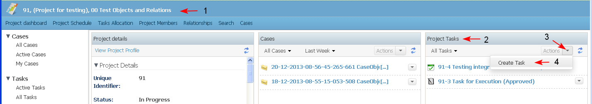
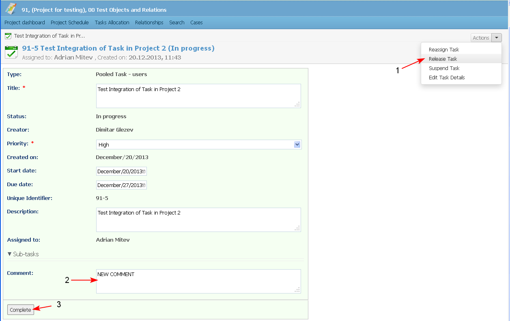

Preconditions
- Only the task assignee and the user with role of "Manager" on the project could create sub-tasks of a task.
- Sub-task could not be created in a task in status "Completed".
Task on Project level
- To create a task on Project level (not related with a case) the user selects from Project Dashboard/ Project Tasks Dashlet/ Actions / Create Task (1-2-3-4).

- A list of all available task types for the project/ case/ task is displayed (based on the object definition), and the user could select one from a drop down menu (1). He fills in the necessary data in the opened empty form and clicks the button "Create Task" (2-3-4-5-6-7)

- The created task appears in the Project Tasks Dashlet. The integrated task in the Project is created in status "Approved".
The pooled tasks which are unassigned, are displayed with flag 'Unassigned' (or instead of the assignee name there is text 'Unassigned') in:
- Personal dashboard/ Tasks dashlet - for each user who is selected in the pool of possible assignees.
- Project dashboard/ Projects Task dashlet - for the project under which the task is started
- Case Dashboard/ Task dashlet - for the case in which the task is started

- The newly created task is in relationship "Parent/ Child" with the project from which it is created (1-2).
- The newly created task is in relationship "Parent/ Child" with the project from which it is created (1-2).

- There is a filter "Unassigned tasks" in the: Task Dashlet in Personal dashboard, Task Dashlet in Project Dashboard, Task Dahslet in Case Dashboard, In the Faceted search/ Tasks/ Unassigned task
The filter displays all the task which do not have Assignee, and are flagged as "Unassigned".

Task on Case level
- To create a (associated with the work on a case) the user selects from:
- Case Dashboard/ Tasks Dashlet/ New Task button, or
- Case Dashboard/ Main Case Manu/ New Task button
The newly created task is in relationship "Parent/ Child" with the case from which it is created.
The task is displayed in the project schedule as an entry of type "Task" (sub-task of the entry of type "Case").
Task as a Sub-task of another Task
- To create a task as sub-task of another task the user selects from Task landing page/ New Sub-Task button.
The newly created task is in relationship "Parent/ Child" with the task from which it is created.
The task is displayed in the project schedule as an entry of type "Task" (sub-task of the entry of type "Task").
Basic Task Types
Single Assignee Task
The newly created task is assigned directly to the user , selected in the task. Only one user could be selected. The task is displayed in the user's personal dashboard/ tasks dashlet.
Pooled Task
A group of users is selected as task assignees, but actually the task remains "Unassigned" until someone from the group claims it:
- An user from the group to which the task has been assigned opens the unassigned task (1-2). Each pooled task has "Claim Task" button in it while still being "Unassigned". The user "claims" the task, this means that he/she confirms that he/she would be the one from the group that will do the job (3-4).

- The task is opened in edit mode and:
- the task becomes assigned to the user who claimed it
- the task is removed from the personal dashboard of all other group members
- button "Release Task" (1) becomes active in the task
The user may edit the task details (2) and complete the task (3) or select another action from the drop down list of actions.

- The user who claimed the task could release it back to the pool at any time before finally completing it, which means that he/she rejects to do the job:
- the task becomes "Unassigned" again
- the task is displayed on the personal dashboards of all users from the group, that was initially selected for the pooled task and button "Claim" becomes active in the task
- any user from the group could claim it again.